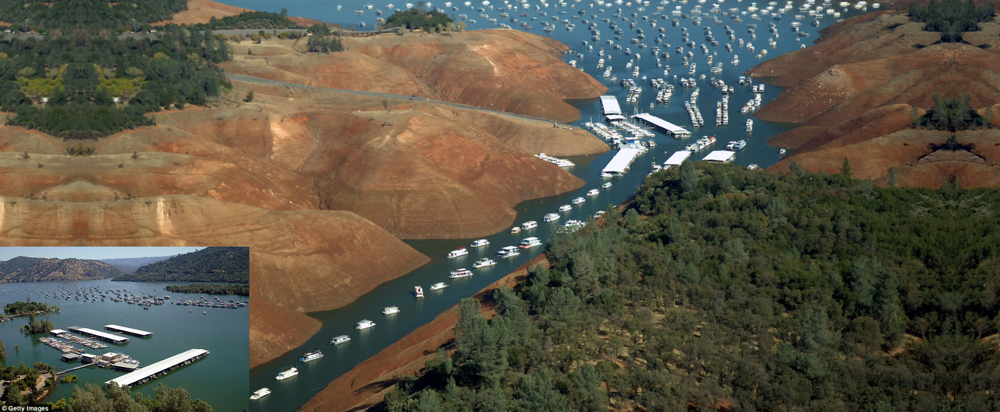
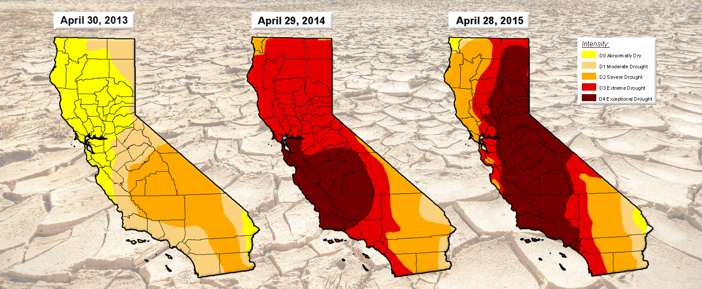
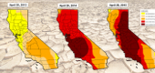

Home
Tutorial
Reservoirs
Withdrawals
Home
Tutorial
Reservoirs
Withdrawals
BUT THE DROUGHT CAME BACK? THE VERY NEXT YEAR!
Ben Steineman & Shiuh-Wuu (Victor) Liu | Harvard University | CS 171 | Spring 2015
Enterprise Bridge near Lake Oroville, the 2nd largest reservoir in California

Once open water shrinks down into increasingly tighter channels at the Bidwell Marina

U.S. Drought Monitor archived maps show worsening drought conditions
Governor of California, Jerry Brown, announces mandatory water usage reductions

Tutorial
Reservoirs
California Reservoir
Levels vs Capacity
Reservoir Utilization
Over Time
Withdrawals
2010 California Water Withdrawal
Sankey Diagram
// Google Analytics